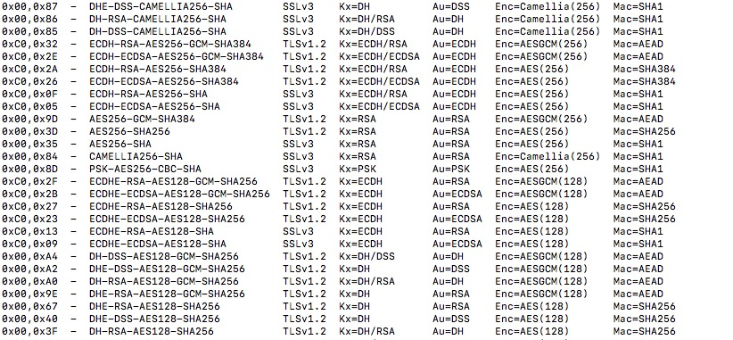

<!DOCTYPE html>
<html>
  <head>
    <title>漫谈网络通讯加密（2）握手流程设计 – Wyman的技术博客 – 写作主题覆盖：游戏开发技术、图形学、机器学习。QQ：234707482</title>

        <meta charset="utf-8" />
    <meta content='text/html; charset=utf-8' http-equiv='Content-Type'>
    <meta http-equiv='X-UA-Compatible' content='IE=edge'>
    <meta name='viewport' content='width=device-width, initial-scale=1.0, maximum-scale=1.0'>
    <meta name="baidu-site-verification" content="0OpfO1OtHA" />
    
    <meta name="description" content="" />
    <meta property="og:description" content="" />
    
    <meta name="author" content="Wyman的技术博客" />

    
    <meta property="og:title" content="漫谈网络通讯加密（2）握手流程设计" />
    <meta property="twitter:title" content="漫谈网络通讯加密（2）握手流程设计" />
    

    <!--[if lt IE 9]>
      <script src="http://html5shiv.googlecode.com/svn/trunk/html5.js"></script>
    <![endif]-->

    <link rel="stylesheet" type="text/css" href="/style.css" />
    <link rel="alternate" type="application/rss+xml" title="Wyman的技术博客 - 写作主题覆盖：游戏开发技术、图形学、机器学习。QQ：234707482" href="/feed.xml" />

    
	<!-- Google Analytics -->
	<script>
		(function(i,s,o,g,r,a,m){i['GoogleAnalyticsObject']=r;i[r]=i[r]||function(){
		(i[r].q=i[r].q||[]).push(arguments)},i[r].l=1*new Date();a=s.createElement(o),
		m=s.getElementsByTagName(o)[0];a.async=1;a.src=g;m.parentNode.insertBefore(a,m)
		})(window,document,'script','//www.google-analytics.com/analytics.js','ga');

		ga('create', 'UA-65954265-1', 'auto');
		ga('send', 'pageview', {
		  'page': '/crypto-2/',
		  'title': '漫谈网络通讯加密（2）握手流程设计'
		});
	</script>
	<!-- End Google Analytics -->
	<!-- Baidu Analytics -->
	<script>
		var _hmt = _hmt || [];
		(function() {
		  var hm = document.createElement("script");
		  hm.src = "//hm.baidu.com/hm.js?0dc968591d8c64196a37eca9ca4f86b3";
		  var s = document.getElementsByTagName("script")[0]; 
		  s.parentNode.insertBefore(hm, s);
		})();
	</script>
	<!-- End Baidu Analytics -->

    <!-- Created with Jekyll Now - http://github.com/barryclark/jekyll-now -->
  </head>

  <body>
    <div class="wrapper-masthead">
      <div class="container">
        <header class="masthead clearfix">
          <a href="/" class="site-avatar"></a>

          <div class="site-info">
            <h1 class="site-name"><a href="/">Wyman的技术博客</a></h1>
            <p class="site-description">写作主题覆盖：游戏开发技术、图形学、机器学习。QQ：234707482</p>
          </div>

          <nav>
            <a href="/">Blog</a>
            <a href="/about">About</a>
          </nav>
        </header>
      </div>
    </div>

    <div id="main" role="main" class="container">
      <article class="post">
  <h1>漫谈网络通讯加密（2）握手流程设计</h1>
  <h3>Tags: <a href="/tag/crypto/" rel="tag">crypto</a></h3>
  <div class="entry">
    <!--more-->

<h1>加密通讯的基础</h1>

<h2><a href="https://en.wikipedia.org/wiki/Cryptographic_nonce">nonce</a>（不重数）</h2>

<p>在进入正文前，先介绍一个关键的东西：nonce，以及几个粗糙的例子，以说明nonce的作用。</p>

<p>nonce本质就是一段随机码，因为不一定是数字，可能是字符，所以不能叫随机数。因此取了个名字叫nonce。</p>

<p>nonce的存在是为了对付<strong>彩虹表(raintable)</strong>、<strong>重放攻击(replay attack)</strong>，或者说为了制造<strong>请求唯一性(request unique)</strong>。</p>

<p>nonce有server nonce、client nonce之分：</p>

<ul>
<li>需要client nonce的原因：阻止邪恶的客户端做重放攻击。</li>
<li>需要server nonce的原因：阻止中间人攻击。</li>
</ul>

<p>nonce的生成策略有讲究：</p>

<ul>
<li>可以是时间相关变量</li>
<li>可以是一个通过强随机算法生成的足够长的bits</li>
</ul>

<h3>例子：登录与登录密码</h3>

<h4>方案1</h4>

<p>直接经过无加密的tcp或者http，发password到服务器进行登录。</p>

<p>问题：登录包一被截取，密码就泄露了，攻击者想怎么搞就怎么搞了。即使不去截取分析密码，也可以直接把登录包保存下来，之后就可以进行重放攻击。</p>

<p>小结：<strong>密码容易泄露；会被重放攻击</strong>。</p>

<h4>方案2</h4>

<p>对password做一个经典的hash：</p>

<p>secret = Hash(password);</p>

<p>客户端只发secret给服务器，服务器执行（这里假设存了密码原文）：</p>

<p>secrect_server = Hash(password_server)；</p>

<p>得到secret_server即可做校验。</p>

<p>问题：攻击者还是截包，就获得了secret，因为每次登录都是发一样的secret，所使攻击者首先可以做<strong>重放攻击</strong>，直接copy用户的登录包，发给服务器，就可以登录了；其次，因为Hash函数无非md5、SHA256这些，完全可以用raintable暴力查表，获得password。</p>

<p>小结：<strong>密码不太容易泄露，但可能会被攻击者用raintable破解密码；仍然会被重放攻击</strong>。</p>

<h4>方案3</h4>

<p>改进：客户端每次登录前，服务器会生成一个nonce并发给客户端，客户端计算：</p>

<p>secret = Hash(nonce_server, password);</p>

<p>客户端只发secret给服务器，服务器执行：</p>

<p>secrect_server = Hash(nonce_server, password_server)；</p>

<p>然后比较secret和secret_server是否一致即可。</p>

<p>优点：</p>

<ul>
<li>客户端每次登录发出去的包都不一样，阻止了重放攻击。</li>
<li>每次登录hash出来的secret都不一样，用户密码比较安全了，要破解密码，得根据secret、nonce_server、Hash，逆向出password，可行，但耗时。</li>
</ul>

<p>问题：服务端发送的nonce可以被中间人篡改成固定的nonce，从而导致nonce特性还是被消去了，攻击者就还是可以弄raintable，暴力破解密码。
拿到密码后，就可以骗过服务器了，实现中间人攻击。</p>

<p>小结：<strong>阻止了重放攻击；密码还是有可能被raintable破解；不能阻止中间人攻击</strong>。</p>

<h4>基于方案3的方案4</h4>

<p>既然方案3中，客户端接收了攻击者篡改出来的固定nonce，并发送了符合攻击者raintable预期的secret，导致密码容易被破解，那么客户端是否可以做一些保护措施，使得发到网络中的secret是随机的呢？</p>

<p>方法是有的，就是客户端也生成nonce， 称之为nonce_client，secret的计算变成：</p>

<p>secret = nonce_client || Hash(nonce_client, nonce_server, password)</p>

<p>（Note：||表示concat操作）</p>

<p>服务器收到secret后拆出nonce_client和hash值，本地也执行一遍这条公式，就能做登录校验。</p>

<p>这样处理后，攻击者即使篡改了nonce_server，攻击者收到的客户端secret依然是随机的。并不能直接查raintable获得password，而必须根据客户端的nonce_client，即时算出一份新的raintable表（计算量巨大），才能破解密码。</p>

<p>问题：</p>

<p>在登录过程中，本质上还是发送了password，就依然有被猜出密码的可能。</p>

<p>首先是因，中间人攻击问题依然存在，中间人继续用固定的nonce_server骗用户发送登录包，消去了一个nonce；如果用户用了位数较少、常见字符组合的密码，即时地暴力破解的难度并不大。</p>

<p>如果这个密码还是用户的常用密码，那后果还是很可怕的，例如拿去别的网站撞库。</p>

<p>进一步的思路：既然发送加密的密码不妥，那就是用DH密钥交换了，就不会有密钥在网络中传输的问题。当然对于用户输入密码登录的场景，DH应该是用不了了。</p>

<p>小结：<strong>阻止了重放攻击；用raintable破解密码的难度很大，密码较为安全；一定程度削弱了中间人攻击</strong>。</p>

<h2>总结</h2>

<p>nonce在TLS规范中被称为ClientHello.random和ServerHello.random。</p>

<p>双nonce能阻止重复攻击(replay attack)、削弱中间人攻击(mitm, man in the middle)。</p>

<p>双nonce也可能导致用户密码泄露。</p>

<h1>简单版本的加密通讯</h1>

<p>首先以一个较为简单的例子来说明：某客户端想和某服务器建立tcp加密通讯。</p>

<p>首先需要一个工具：公钥私钥对（非对称加密技术）。</p>

<ol>
<li>服务器在本地或数据库中存放了用于和任意客户端建立通讯的公钥私钥对。</li>
<li>客户端想和服务器通讯时，服务器发送公钥给客户端。客户端确信用这个公钥加密的数据只有这个服务器能解密。（暂时不考虑中间人攻击问题）</li>
<li>客户端计算一个key（其实是master key，下文会介绍），这个key可能真的是本地算出来的，也可能用DH算法和服务器交换出来的。如果是本地算出来的，那就必须用刚刚的非对称加密通讯信道，发给服务器。总之，key是客户端服务器都得持有。</li>
<li>客户端服务器各自生成nonce，互发给对方。此时双方都持有key、cnonce、snonce。</li>
<li>客户端服务器各自本地计算Hash(key，cnonce，snonce)获得真正用于通讯的对称密钥encrypt key。</li>
<li>另外的，客户端服务器还可以计算Hash2(key，cnonce，snonce)，获得用于别的用途的key，例如integrity protection key，验证消息用的key。</li>
</ol>

<p>这6步搞懂后，再看以下4点：</p>

<ol>
<li>仔细看，第三步传递key之后的步骤其实不是必须的，因为key是用安全的非对称加密信道协商了，没有泄露key的问题。</li>
<li>基于第1点，如果每次建立通讯，都走一遍1-3步，就已经保证每次通讯用的key都是不一样的。</li>
<li>然而，如果每次建立通讯都要走1-3步骤的话，开销会比较大，所以key其实是要复用的。例如客户端可以缓存在本机，服务器就缓存到数据库，设个过期时间。</li>
<li>基于第2、3点，复用key且废弃4-6步，能使得建立通讯的成本很低，但每次通讯都用的同一个key。</li>
</ol>

<p>但这么搞会有个<strong>前向保密（forward privacy）</strong>问题：</p>

<p>假如哪天这个非对称加密的信道被破解了，即服务器私钥泄露，而攻击者早已抓了用户和服务器之间的所有包，那么攻击者就可以用这个私钥解开登录包，获得key。<strong>这种攻击也算是中间人攻击</strong>。</p>

<p>所以反过来说，<strong>每次建立通讯，不计成本，都完整走完1-6步，就能保证前向安全</strong>。</p>

<p>总结：</p>

<p>这个版本的加密通讯已经假设保证了一个非对称加密信道，但如果不使用nonce的话，还是有可能遭到中间人攻击。对于已经了解过公钥加密体系/https原理的同学，想必此时已经很清楚nonce重要性。</p>

<h1>完整版本的加密通讯</h1>

<h2>一，公钥证书</h2>

<p>在互联网中通讯，只有依靠公钥证书这套机制，才能<strong>确认正在通讯的对端是不是你所预期的服务器</strong>。</p>

<p>简要地回顾下：</p>

<ol>
<li>服务器向客户端出示由某CA签发的公钥证书，即CA用<strong>CA私钥</strong>加密了服务器公钥，导出来的东西，称之为公钥证书</li>
<li>在握手前，用户的浏览器已经安装了该CA的证书，该证书里面有CA的公钥</li>
<li>客户端用本地CA公钥，<strong>解密</strong>收到的公钥证书得到服务器公钥。解得出来，那就说明这个服务器公钥（证书）确实是这个CA曾经用私钥加密过的。</li>
<li>当然，公钥证书是有过期问题的，例如服务器把私钥泄露了，那相应的公钥证书就得从CA里删掉，这就涉及到了<strong>证书撤销列表CRL</strong>。CRL就是一个数据库，这个数据库显然得支持分布式，否则全世界的用户都涌到中心化的服务器去验证证书是否已被撤销，那是做不到的。而分布式数据库，显然就有个更新同步延迟问题，中心数据库更新了CRL，什么时候本地能更新CRL缓存，就决定了安全度有多高。</li>
</ol>

<p>第4步骤先不说，前3步骤才是最关键的。这些流程，完全是为了<strong>确认正在通讯的服务器是不是自己所信任的CA签名了的服务器</strong>。信任的根基是CA，客户端只相信CA，CA说什么就是什么。</p>

<p>值得思考的问题：</p>

<ul>
<li>客户端会不会装了不可靠的CA证书。如果是，那后面的所有流程都是白搭了。中间人攻击问题浮现。</li>
<li>通讯双端没有CA基础设施怎么办？例如假设开发工具只有socket（tcp udp）可用，没有openSSL、也访问不了本地CA数据库。答案是直接把服务器公钥硬编码到客户端安装包里，只要用户确保是从正规途径下载的安装包，那么就可以保证客户端里的公钥是真实服务器的公钥。例如从app store下载游戏。</li>
</ul>

<h2>二，都是为了加密性能</h2>

<p>第一步中，客户端和服务器已经建立了可靠的<strong>非对称加密通讯</strong>，客户端持有服务器的公钥，客户端用公钥加密自己数据，只有服务器才能解密，不就万事大吉了吗？</p>

<p>然而很可惜的是，非对称加密算法，性能一般都差强人意，远不如<strong>对称加密算法</strong>。所以如果用户要发送大量隐私数据给服务器，且只用非对称加密的话，先不说客户端耗能，服务器的CPU首先就炸了。</p>

<p>用指令openssl speed xxx，可以认识到各种算法的性能：</p>
<div class="highlight"><pre><code class="language-text" data-lang="text"><span></span>                        sign        verify          sign/s    verify/s
rsa 2048 bits 0.000738s 0.000022s   1354.2  45918.7

因为rsa是按次的，这里得换算成k bytes才能和aes比较，即乘以256再除以1000：
rsa 2048 bits 0.000738s 0.000022s   346.7k 11755.2k


type             16 bytes     64 bytes    256 bytes   1024 bytes   8192 bytes
aes-128 cbc      99115.02k   115128.04k   122790.06k   126412.46k   126915.93k

                              op      op/s
 256 bit ecdh (nistp256)   0.0001s  14937.4
 384 bit ecdh (nistp384)   0.0008s   1265.2
 521 bit ecdh (nistp521)   0.0009s   1148.1
</code></pre></div>
<p>显然可以看出rsa和aes根本不是同个数量级的，rsa私钥运算大约比aes慢1000倍。</p>

<p>性能是关键，接下来的步骤，都得归咎于非对称加密算法的性能。</p>

<h2>三，前主密钥和主密钥：pre-master key和master key</h2>

<p>因为性能问题，我们希望尽可能不使用非对称加密通讯信道，甚至不去建立非对称加密通讯。</p>

<p>最终的，非对称加密通讯所要负责的事情，被精简成一件事：协商一个master key。</p>

<p>在说master key时，需要搞清楚pre-master key和master key分别是什么，有什么区别：</p>

<p>pre-master key：</p>

<p>是服务器和客户端<strong>直接协商</strong>出来的产物（key exchange）。例如用ECDH密钥协商算法算出来的东西。要提的2点是：</p>

<ul>
<li>pre-master key是<strong>不定长</strong>的，取决于选择了什么样的密钥协商算法，一般算法越强，长度越长。</li>
<li>pre-master key是保密的。</li>
</ul>

<p>master key：</p>

<p>正因为pre-master key不定长的问题，导致分裂出了pre-master key和master key两个东西。</p>

<p>master key是<strong>定长</strong>的。master key从pre-master key派生，是它的亲儿子。</p>

<p>这个<a href="https://tools.ietf.org/html/rfc5246#section-8.1">RFC</a>里有提及如何算master key:</p>
<div class="highlight"><pre><code class="language-c" data-lang="c"><span></span><span class="n">master_secret</span> <span class="o">=</span> <span class="n">PRF</span><span class="p">(</span><span class="n">pre_master_secret</span><span class="p">,</span> <span class="s">&quot;master secret&quot;</span><span class="p">,</span>
                          <span class="n">ClientHello</span><span class="p">.</span><span class="n">random</span> <span class="o">+</span> <span class="n">ServerHello</span><span class="p">.</span><span class="n">random</span><span class="p">)</span>
                          <span class="p">[</span><span class="mf">0..47</span><span class="p">];</span>
</code></pre></div>
<p>用本文的术语来表达的就是：</p>
<div class="highlight"><pre><code class="language-c" data-lang="c"><span></span><span class="n">master_key</span> <span class="o">=</span> <span class="n">PRF</span><span class="p">(</span><span class="n">pre_master_key</span><span class="p">,</span> <span class="s">&quot;master key&quot;</span><span class="p">,</span>
                          <span class="n">nonce_client</span> <span class="o">+</span> <span class="n">nonce_server</span><span class="p">)</span>
                          <span class="p">[</span><span class="mf">0..47</span><span class="p">];</span>
</code></pre></div>
<p>（PRF（Pseudo-random function），是<strong>伪随机导出函数</strong>。这段代码意思是，根据pre-master key、nonce_client、nonce_server三个参数，伪随机地，导出了一个master key，定长48字节。）</p>

<p>（PRF的简单实现是hash(key || msg)或hash(msg || key)或hash(key || msg || key)，三种情况的问题不太一样，但都是naive的，例如可能会遇到<a href="https://en.wikipedia.org/wiki/Length_extension_attack">Length extension attack</a>。严格的PRF实现是HKDF，下篇文章再介绍。）</p>

<p>RFC里补充说，一旦得到了master key，即可从内存干掉pre-master key。对待生父是如此的残忍啊，不过也是必要的，免得给恶意程序可乘之机。（nonce_client、nonce_server并不能删除，之后还要用到）</p>

<p>pre-master key在master key出来后消失了，生命期非常短暂，所以本节重点显然是master key。</p>

<p>这节不说master key的作用，先说master key的管理问题。</p>

<p>在常规的https通讯中，每次tcp连接都意味着计算一个新的master key，成本挺高，当然安全性也高。</p>

<p>但有的时候想要节约掉这个成本，例如连续不断地对同个服务器发起多次https请求（短连接），于是就有人发明了缓存机制。</p>

<p>缓存，就是指长时间地妥当地把master key存起来，随时拿出来用。但并不能直接存取，会有安全问题。</p>

<p>有2种套路，一个是session id，本质是服务器做缓存；另一个是session ticket，是客户端做缓存。</p>

<h3>session id</h3>

<p>在之前的密钥协商后，服务器会分配一个session id，并在数据库中存入以session id为键的会话信息如master key。下次做密钥协商时，客户端发现已经缓存了一个session id，那么发id给服务器，如果服务器能在数据库找出这个id对应的master key，那么就不需要去协商master key了。不过缺点是很难维护一个这样子的数据库。</p>

<h3>session ticket</h3>

<p>新的会话建立时，服务器用一个只有自己知道的密钥（ticket key）对master key做加密，把密文ticket发给客户端，客户端单纯地只把ticket缓存起来。下次要建立会话时，把缓存的ticket发给服务器，服务器解密，就拿到之前的master key。因为ticket key必须所有服务器一致，且不可变，也有一定安全风险，现在一般是采用轮转的方式，定时地渐进式地淘汰旧的ticket key（新的会话用旧的ticket key尝试解密，用新的ticket key加密）。</p>

<p>这两种方案中，共同点都是客户端依然得自己缓存好master key。</p>

<p>关于master key还有它自身的时效性问题。是否缓存一次，永久使用？答案是不可以，这不安全。</p>

<p>一般master key要设个过期时间，一天、一个星期、一个月，加了限时，就保证了要定期更换，一定程度降低了master key泄露的风险。过期时间服务器决定，客户端如果缓存的是过期的master key，那服务器应有反馈，并重新协商新的master key。</p>

<p>Note: 在TLS1.3中，session id、session ticket的做法已经被废弃了。session ticket被更新为一个类似的东西：PSK(pre-shared key)。</p>

<h2>四，基于master key，得到对称加密密钥，建立对称加密通讯</h2>

<p>刚才的简化例子有一点没有说清楚的，就是nonce怎么发送。</p>

<p>实际上，nonce_client, nonce_server，都可以不经过加密通讯信道直接发送，泄露了也没关系。</p>

<p>因为需要的对称加密密钥基于三个参数：</p>

<p>master key = Hash(pre-master key，nonce_client, nonce_server)</p>

<p>我们不怕泄露后2个，因为第一个pre-master key已经保证保密了。这样子hash出来的master key也依然是保密的。</p>

<p>有了双方一致的master key，就可以拿出各种对称加密算法，来建立加密通讯了。</p>

<p>要注意的点：</p>

<ul>
<li>nonce_client, nonce_server存在的意义前文也说过了，主要是防止重放攻击、中间人攻击，所以每次想要用pre-master key建立加密通讯，都是即时地重新协商nonce，并算新的master key。</li>
<li>master key实际上不能直接用来加密，而是要导出（派生？）成多个key，按实际需求导出，要多少个就导多少个。例如因为tcp是全双工连接，有2个数据流方向，2个方向的encrypt key如果一样，安全系数就降低了。master key这种导出性质，使得它被称为<strong>主</strong>密钥。</li>
</ul>

<h2>五，加密数据的完整性保证</h2>

<p>前四步骤已经几乎建立了绝对可靠的性能不错的加密通讯，但还有一个问题：建立加密通讯后，客户端发出去的包，依然还是有被截包篡改的可能。</p>

<p>例如A用encrypt key加密了原文a得到密文b，用tcp把b发出去，b被攻击者截取，攻击者可能用各种奇奇怪怪的方法尝试篡改这个密文b变成密文c，亦或者替换了b变成密文d（很可能是通讯早期截获的包！），然后继续发向服务器，那么就还是不安全，因为客户端想要发给服务器的密文b并没有真正送到，服务器还处理了别的密文！</p>

<p>还有一种情况是，客户端和服务器的对称密钥因为某种原因不同步了，这样会导致服务器用错误的对称密钥解密数据得到了“乱码”，但服务器是完全感知不到用了错误的密钥，服务器无法知道乱码是不是乱码。</p>

<p>（即使是加密通讯的建立过程本身，都有完整性安全漏洞，包括下一节会说到的<strong>算法选取</strong>。根源在于一开始使用的非对称加密信道是单向安全而不是双向安全的。）</p>

<p>那怎么办呢？答案是再给密文b加一层<strong>认证</strong>。</p>

<p>简单理解就是，客户端给密文b做个hash，得到消息验证码MAC（上一篇文章介绍过的)，把密文b和MAC一起发给服务器，服务器也对收到的密文做一样的hash，如果服务器得到的MAC值和客户端的MAC值不一致，那就说明数据不是客户端发来的。</p>

<p>hash函数刚才也提到过了，需要一个integrity key，也是基于master key的。攻击者没有办法获得一样的hash函数。</p>

<p>MAC的安全隐患上一篇文章也说到过了。最经典的是重放攻击，就是攻击者并不篡改密文和MAC，而只是原样地保存下来，并伺机重复发送给服务器。这个问题的解决办法就是对每条消息加一个递增的序号。同样的消息就不可能收到两次。</p>

<p>P.S. 用一个额外的MAC（其实应该叫做MtE，EtM，E&amp;M）来保证完整性已经是一种过时的思路，有安全缺陷。其中只有EtM(encrypt then MAC)是安全的，是一个大坑。让程序员搞懂这三者区别也是痛苦。所以现在并不提倡EtM之类的做法了。</p>

<p>取而代之的是AEAD。所谓AEAD，含义是在对称加密算法里添加了完整性验证的功能，例如AES-128-GCM、ChaCha20-IETF-Poly1305。所以AEAD并不是一种算法，而只是方案的代名词。在即将到来的TLSv1.3中，已经彻底干掉MAC，而统一用AEAD了。</p>

<p>然后剩下就是<strong>握手过程</strong>的认证问题。</p>

<p>这个问题很有意思，因为我们的加密通讯已经建立了，认证机制也有了。<strong>这时候反而可以回过头来认证下握手过程</strong>。</p>

<p>客户端和服务器在tcp三次握手后直到建立SSL连接，中间n次交流的内容（有对称性），都记录下来，然后在连接建立完成后，互相在本地对这些内容做一次HMAC计算，并把MAC值发给对方校验，如果不一致，说明有中间人篡改了某次交流，那么关闭本次连接。</p>

<h2>六，加密算法选取</h2>

<p>上面的五大步骤，其实都没有限定具体用什么算法。据我了解，如果不用openSSL之类的库，而是自己手动组合，那么可以这么弄：</p>

<ul>
<li>master key：ECDH</li>
<li>对称加密：AES</li>
<li>生成encrypt key：SHA256</li>
<li>生成integrity key：SHA256 with salt</li>
<li>生成消息验证码：HMAC with integrity key</li>
</ul>

<p>这对程序员的要求比较高，需要了解各种算法的优缺点和如何组合，是否适合配对。</p>

<p>所以算法选取这个事情，已经被建立起规范，关键词叫做cipherSuite，例如openSSL就支持，可以执行openssl ciphers -V | column -t，看到系统的openSSL支持的cipherSuites：</p>

<p></p>

<p>（注意，SSLv3已经过时了，现在都是TLSv1.2，即将出现TLSv1.3）</p>

<p>第一列2个十六进制值相当于ID。</p>

<p>以其中最常见的0xC0,0x2F为例：</p>

<p>0xC0,0x2F  -  ECDHE-RSA-AES128-GCM-SHA256    TLSv1.2  Kx=ECDH        Au=RSA    Enc=AESGCM(128)    Mac=AEAD</p>

<p>含义：</p>

<ul>
<li>用于TLSv1.2版本</li>
<li>kx = key exchange，使用ECDHE做秘钥交换。就是上一篇文章说的DH基于椭圆曲线EC算法的变种。最后的E代表ephemeral，表示转瞬即逝性。</li>
<li>Au = authenticity，使用RSA做认证</li>
<li>Enc = encryption，使用AES-128-GCM做对称加密。GCM意味着加密算法支持认证功能。</li>
<li>MAC = AEAD（authenticated encryption with associated data），一种同时具备保密性(confidentiality)，完整性(integrity)和可认证性(authenticity assurances)的加密形式。 MAC=AEAD意思是说“把这些认证问题交给对称加密算法就行了，不需要MAC”。</li>
</ul>

<p>所以撇除掉融合到加密算法里的MAC，那么CipherSuite其实只有3个东西：</p>

<ul>
<li>1个key exchange 密钥交换算法</li>
<li>1个authentication 认证算法</li>
<li>1个encryption 对称加密算法</li>
</ul>

<p>引入CipherSuite，说明算法的选取不是完全定死的，而是可以根据需要协商的。</p>

<p><strong>协商过程会发生在tcp三次握手后的第一个包里</strong>。</p>

<p>这就要注意1个问题：<strong>算法选取过程是无加密的</strong>，发生什么攻击都可能。</p>

<p>例如中间人攻击，中间人篡改了算法协商的内容，使得通讯双方用了安全度较低的、符合中间人预期的加密算法，那么这次通讯就不那么安全了。</p>

<h1>总结</h1>

<h2>概括一下加密通讯标准过程</h2>

<p>从tcp握手到算法协商完成，步骤大致如下：</p>

<ol>
<li>tcp完成三次握手</li>
<li>客户端发送它支持的CipherSuite列表和client nonce（所谓的ClientHello）</li>
<li>服务器从该列表中，选择一套合适的算法，然后连同自己的<strong>公钥证书</strong>、server nonce、握手信息的数字签名，发给客户端（ServerHello）</li>
<li>客户端验证证书，得到服务器公钥，基于公钥协商pre-master key，导出master key。</li>
<li>客户端服务器各自本地计算各个对称密钥。</li>
<li>客户端验证本次连接握手信息（数字签名）。（单向认证）</li>
</ol>

<h2>0-rtt，1-rtt？</h2>

<p>搞通讯偶尔会看到什么0-rtt，1-rtt，其实都指的是基于TLS连接，和tcp的三次握手没关系。</p>

<p>TLS连接握手，是发生tcp三次握手后的事情，即三次握手后，还要经过多少个rtt回合，才能建立TLS连接？</p>

<p>用1-rtt搞定TLS连接，那么这一个rtt必然是用来协商对称加密密钥的。比如说，你的程序可以强制客户端和服务端只用DH算法协商密钥，并且这个rtt里也发送各自的nonce，那么1-rtt后，通讯两端就都拥有了master key、cnonce、snonce。</p>

<p>至于0-rtt，必然是有损安全性的。0-rtt意味着第一个数据包就得支持发送用户数据，那必然是用某种缓存的key来加密用户数据。这个key叫做半静态ECDH公钥。原理有点像前面说的，游戏客户端硬编码了服务器公钥。</p>

<p>缺陷在于：</p>

<ol>
<li>0-RTT发送的应用数据没有前向安全性</li>
<li>跨连接可以重放0-RTT里的应用数据（任何服务器端无共享状态的协议，都无法做到跨连接防重放）</li>
<li>如果服务器端 半静态 ECDH公钥对应的私钥泄露了，攻击者就可以伪装成客户端随意篡改数据了。</li>
</ol>

<p>这简直就是性能和安全的博弈。google的QUIC就很好地实现了0-rtt。</p>

<h1>微信mmtls对比</h1>

<p><a href="http://www.52im.net/thread-310-1-1.html">mmtls介绍</a></p>

<p>mmtls是微信自己设计的简化的&quot;TLS1.3&quot;协议。</p>

<p>mmtls分为3个部分：</p>

<ul>
<li>handshake协议：tcp连接建立后的密钥协商。</li>
<li>alert协议：handshake失败时需要显式告诉对端。微信是服务端告诉客户端，让客户端来关闭连接，避免服务端过多的TIME_WAIT状态。</li>
<li>record协议：负责上层数据的加密传输</li>
</ul>

<p>算法组成：ECDH + ECDSA + AES-GCM（AEAD）</p>

<p>几个关键点：</p>

<ul>
<li>去掉了CA公钥证书这个环节，取而代之的是把认证公钥（verify_key）直接嵌入到客户端里，只要保证客户端来自官方渠道，就保证了verify_key不是中间人伪造的。</li>
<li>把verify_key固定在客户端后，如果认证私钥（sign_key）泄露，怎么撤掉verify_key。方法是强制更新客户端，同时服务端加强对认证私钥的存放管理，怎么管理原文没有细说。</li>
</ul>

<p>mmtls是对TLS1.3草案的精简，觉得与其分析mmtls还不如先好好看一遍TLS1.3，而且openSSL1.1.1-pre8已经发布了，支持TLS1.3。</p>

<p>。。。</p>

<p>嗯，后来我也看了下TLS1.3，因为带了很多历史包袱，其实不太好理解。openSSL的代码，也是巨复杂，啃不动。所以TLS1.3目前觉得还不是时候学习，等openSSL发布正式版，再来抓包、追踪代码学习，可能比较好。</p>

<h1>参考资料</h1>

<p><a href="https://blog.helong.info/blog/2015/09/07/tls-protocol-analysis-and-crypto-protocol-design/">https://blog.helong.info/blog/2015/09/07/tls-protocol-analysis-and-crypto-protocol-design/</a></p>

<p><a href="https://blog.helong.info/blog/2015/01/23/ssl_tls_ciphersuite_intro/">https://blog.helong.info/blog/2015/01/23/ssl_tls_ciphersuite_intro/</a></p>

<p><a href="https://www.cryptologie.net/article/340/tls-pre-master-secrets-and-master-secrets/">https://www.cryptologie.net/article/340/tls-pre-master-secrets-and-master-secrets/</a></p>

  </div>
  <div class="entry">
  (未经授权禁止转载)
  </div>
  <div class="date">
    Written on July  1, 2018
  </div>
  <p>博主将十分感谢对本文章的任意金额的打赏^_^</p>
  
  
    
    
  
<div class="comments">
	<div id="disqus_thread"></div>
	<script type="text/javascript">

	    var disqus_shortname = 'qiujiawei';

	    (function() {
	        var dsq = document.createElement('script'); dsq.type = 'text/javascript'; dsq.async = true;
	        dsq.src = '//' + disqus_shortname + '.disqus.com/embed.js';
	        (document.getElementsByTagName('head')[0] || document.getElementsByTagName('body')[0]).appendChild(dsq);
	    })();

	</script>
	<noscript>Please enable JavaScript to view the <a href="http://disqus.com/?ref_noscript">comments powered by Disqus.</a></noscript>
</div>

</article>

    </div>

    <div class="wrapper-footer">
      <div class="container">
        <footer class="footer">
          
<a href="mailto:voyagingmk@gmail.com"><i class="svg-icon email"></i></a>


<a href="http://github.com/barryclark/jekyll-now"><i class="svg-icon github"></i></a>


<a href="http://twitter.com/voyagingmk"><i class="svg-icon twitter"></i></a>


        </footer>
      </div>
    </div>

  </body>
</html>
